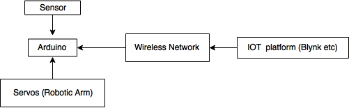
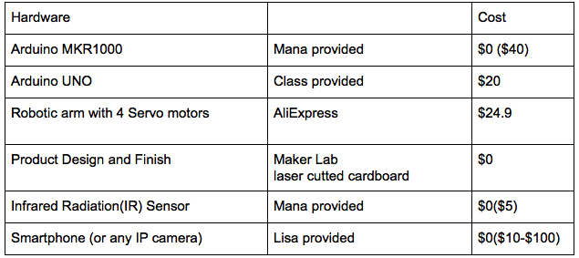
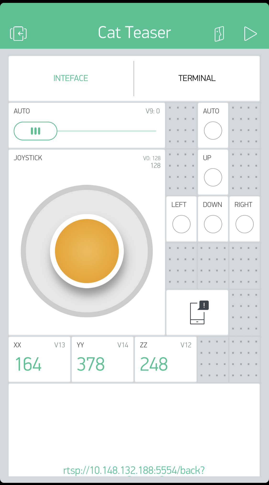
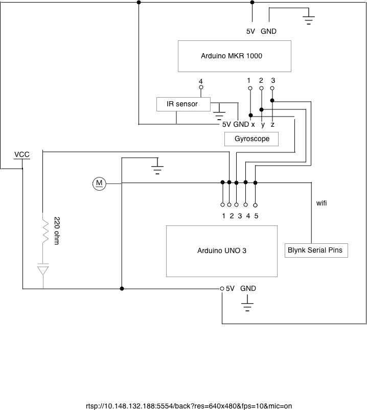

Here is the system components of initial design at early stage.
Here is a intuitive graph we had in plan of how the system can integrate together:

And here is an update of what the system components are:

Then, here are the details about the components and software details. For software, we used Arduino with C language, Blynk IoT Platform
Components of the project
Components:
IR sensor : emit infrared and detect its rebound, can detect the existence of cats in interested area.
Gyroscope: detect movements and read (x,y,z), can detect motion of cats.
Arduino MKR1000 :microcontroller takes input from IR sensor, communicates through Wifi through private server, and connects to the Arduino UNO through digital pins.
Arduino UNO: microcontroller controls the movement of robotic arm, programmed to set movements and specific gestures, and connects to the Arduino MKR1000 through digital pins.
IP camera: Takes video and stream from local host then transmitted through RTSP.
Blynk user end, which will shoot alert if the sensors detect cats nearby:
The slide bar on the top allows the user to go Auto or Manual mode of running the robot, and the virtual joystick in the center can be used to control the direction of movement of the robot arm, and the link downbelaw is to connect to the server set from Andriod end, in application it takes input from remote camera and live stream as a feedback.
Circuit Diagram of Project
As shown in picture above, here is the circuit diagram of how the electronics are integrated together, and the actual project control unit takes a space of 6inch x 6 inch x 5 inch, powered by a power bank.